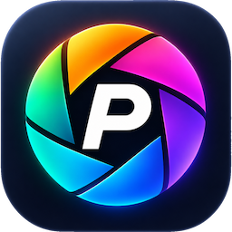
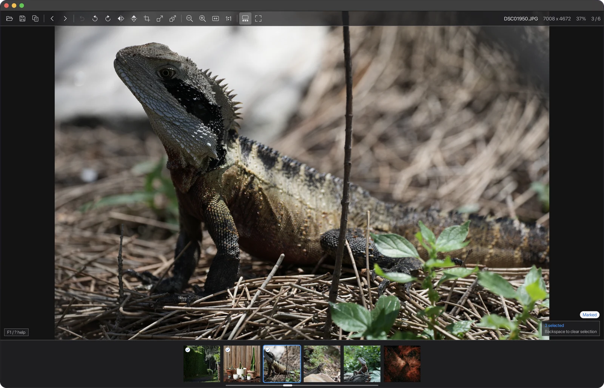

PanditePandite is a fast image viewer for Windows, macOS and Linux. It opens photos and camera RAW files at once, and it never uses the network.
npx pandite
Pandite is small and tuned to load images fast, so you spend less time waiting and more time sorting, comparing and managing your pictures.
A typical photo is on screen in a fraction of a second. The next and the previous image are ready before you ask.
The 10 most common RAW formats, from Sony, Canon, Nikon, Fujifilm, Olympus, Panasonic, Pentax, Samsung and DNG, developed by Pandite itself.
Pandite makes no network connection. No account, no tracking, no telemetry. Your pictures stay on your computer.
Select and copy text from a screenshot or a photo. The recognition runs on your computer.
Crop, resize, rotate and bulk resize. Mark images, then move, copy or delete them together.
One viewer with the same keys on Windows, macOS and Linux, on x64 and ARM.
Everyday formats, modern formats and camera RAW files.
Pandite is free. Pick the way that suits your system.
With Node.js 18 or later. It installs the latest release and updates an older one.
npx panditeRun the setup program for x64 or ARM64 from the release page, or unpack the portable zip.
Release filesOpen the disk image and drag Pandite to Applications. The app is signed and notarized by Apple.
Release filesA .deb for Debian and Ubuntu, an .rpm for Fedora and openSUSE, and a tarball for every other system.
Release filesPandite is written in Rust and published under the MIT license. Read the code, report a problem, or build it yourself.